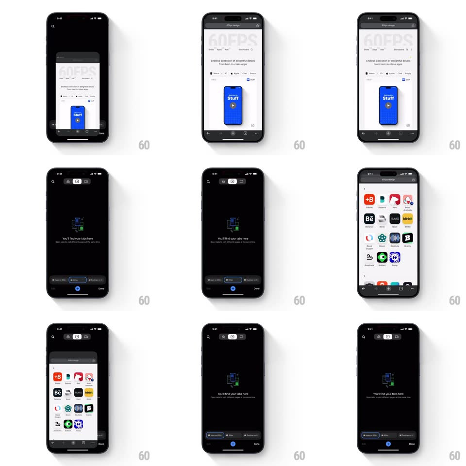

Media
Frame-by-frame

Rebuild this interaction 1:1: Chrome mobile's tab-switch morph - tapping the tab counter shrinks the active web page down from full screen into a compact card that flies to its slot in the tab grid; tapping another card reverses the morph, scaling it up from its slot into the full page.

Rebuild this interaction 1:1: Chrome mobile's tab-switch morph - tapping the tab counter shrinks the active web page down from full screen into a compact card that flies to its slot in the tab grid; tapping another card reverses the morph, scaling it up from its slot into the full page.
## Integration
Integration: stack-agnostic spec - springs given as stiffness/damping, timed motions as duration + curve; map every value to your framework and animation library of choice.
## Scene
Two states: the full web page (URL bar top, content, bottom toolbar) and the dark tab-switcher grid of page cards ("You'll find your tabs here" empty state when none). The morph connects the live page to its grid card.
## Motion spec
Pattern: shared-element scale morph between page and card.
- Tap the tab count: the page scales down from full screen (scale 1 -> card size, spring ~320/26, 380ms) while its corners round (0 -> 16px) and the URL/toolbar chrome crossfades into the card's title bar.
- The shrinking page travels to its grid slot (position interpolates with the scale, same spring) as the dark grid background fades in behind it.
- Sibling cards fade/scale in around it (opacity + scale 0.94 -> 1, 250ms, 50ms stagger).
- Tap a card: it scales up from its slot into the full page (spring ~320/26, 380ms), corners squaring and chrome restoring, while the grid fades out.
- The active page keeps rendering during the morph - it is a live view, not a screenshot.
## Calibration
- Scale, position, and corner radius animate on one curve - splitting them breaks the shared-element illusion.
- The morph endpoints are pixel-aligned with the grid slot - no final "snap" jump.
## Reduced motion
Crossfade between page and grid (250ms) with a simple scale down/up.
## Don't miss
- The bottom toolbar folds into the card chrome during the shrink - it never just vanishes.
- The grid appears behind the shrinking page, not after it.